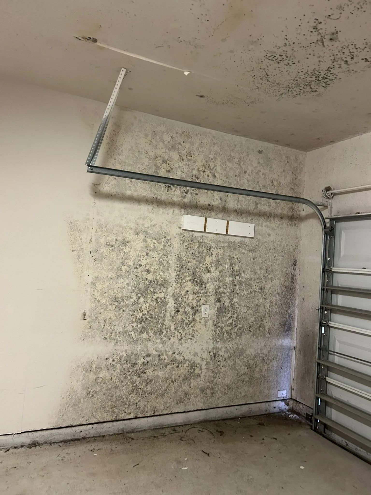
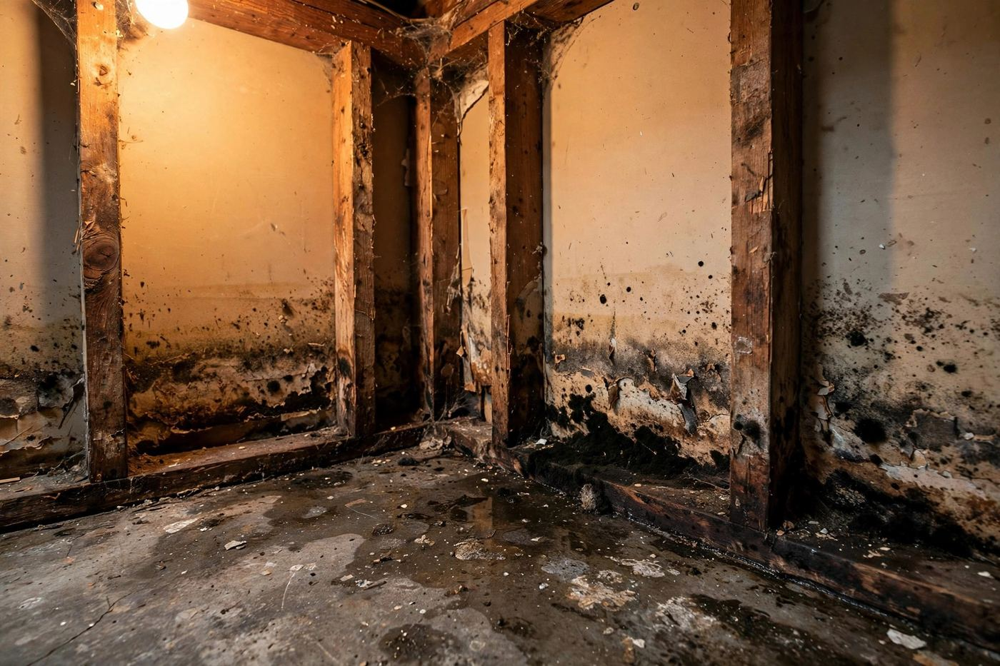
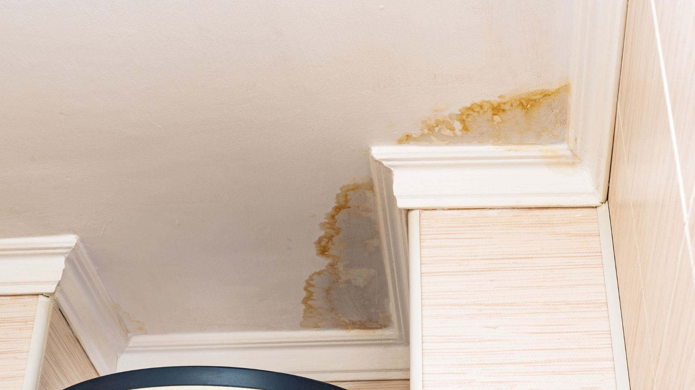

Mold Remediation Cost in Boise
Most professional mold remediation jobs in the United States cost between $1,200 and $3,750, with a national average around $2,300, usually priced at $10 to $25 per square foot of affected area.
- $1,200 to $3,750 typical job
- $10 to $25 per square foot
- National ranges, not a quote

Cost by job size
Those national figures come from HomeAdvisor (June 2026) and This Old House (March 2026). They are the right starting point for budgeting, not a quote for your house and not a Boise-only price. Your final cost comes down to three things: how much area is affected, where the mold is growing, and how much material has to come out.
| Job size | Typical range |
|---|---|
| Small patch (under about 10 square feet) | $500 to $1,500 |
| Typical contained job (one room or area) | $1,200 to $3,750 |
| Large or whole-house remediation | $10,000 to $30,000 |
Small jobs often cost more per square foot than large ones, because most contractors apply a minimum job charge no matter how small the area is. The per-square-foot rate is most useful for mid-size and large areas, not for a single patch.
Cost by location in the home
| Location | Typical range |
|---|---|
| Bathroom | $500 to $1,000 |
| Basement | $500 to $3,000 |
| Crawl space | $500 to $2,000 |
| Attic | $1,000 to $4,000 |
| HVAC system and ductwork | $3,000 to $10,000 |
| Whole house | $10,000 to $30,000 |
These ranges come from Angi cost data as reported by This Old House. Bathrooms usually cost less because the mold sits on visible, non-porous surfaces like tile and grout. Basements swing widely: mold on exposed concrete costs less than mold that has spread into framing, insulation, or stored belongings. HVAC jobs cost more because the system moves air through the whole house, so containment and cleaning get bigger.

Not sure which range fits your house? Tell us where the mold is and roughly how big the area is.
Call (321) 985-3339What the per-square-foot rate means in practice
At $10 to $25 per square foot of affected area, the math looks like this:
| Affected area | Remediation only, before rebuild |
|---|---|
| 50 square feet | $500 to $1,250 |
| 100 square feet | $1,000 to $2,500 |
| 500 square feet | $5,000 to $12,500 |
That is simple multiplication from the published rate, and it covers containment, removal, HEPA filtration, and cleaning. It usually does not cover rebuilding. Jobs involving wall cavities, confined spaces, or hazardous species can run $15 to $30 per square foot.
What pushes the price up or down
| Factor | How it moves the price |
|---|---|
| Size of the affected area | The biggest driver. More area means more containment, labor, and disposal. |
| Location and access | Attics, crawl spaces, and wall cavities cost more than open, reachable surfaces. |
| Material that must be removed | Drywall, insulation, and carpet pad that have grown mold usually come out. Framing that stays gets cleaned. |
| Containment and HEPA filtration | Sealed work areas and negative air pressure protect the rest of the house, and they add labor and equipment. |
| Moisture source repair | The leak has to be fixed, or the mold comes back. Plumbing repair is often a separate line. |
| Mold type | Growth that needs higher-grade protection and sealed waste handling costs more. |
| Testing and clearance | Inspection and lab testing are usually priced separately (see below). |
What is usually not in the remediation quote
A remediation quote typically stops at clean, dry, verified framing. These items are often separate, so ask about each one before you agree to anything:
- Inspection: about $200 to $600 for a standard home inspection, more for large homes.
- Testing: basic mold testing runs about $250 to $350; comprehensive testing with lab analysis runs about $450 to $800.
- Rebuild: replacing drywall, flooring, carpet, and trim after clearance. HomeAdvisor lists drywall repair or replacement at about $1,000 to $2,900.
- Plumbing or leak repair: fixing the source of the water.
- Contents cleaning: furniture, clothing, and stored items.
When you compare quotes, compare the same scope: same affected area, same containment, same clearance standard, and the same exclusions. A quote that skips containment or rebuild will always look cheaper. It is not the same job.
What about Boise specifically?
Here is the honest part: there is no published Boise-only mold remediation price, and any page that gives you one is guessing. Boise jobs follow the same national cost structure, and the final number depends on local labor, access, and scope. The ranges on this page are the right starting point for budgeting. An exact price needs someone to look at the affected area and measure it.
If you are comparing quotes in the Boise area, get the scope in writing from each contractor. That one step protects you more than anything else on this page.
DIY or professional?
The U.S. Environmental Protection Agency (EPA) draws a practical line at about 10 square feet. A small patch on a hard, non-porous surface can often be cleaned by a homeowner with proper protection. Porous materials like drywall and wood are different: growth inside the material cannot be wiped away, and bleach mostly lightens the stain while adding water.
Anything larger than about 10 square feet, growth that keeps coming back, mold inside walls or HVAC, or anyone in the home with asthma or a weakened immune system is worth a professional assessment. If you are not sure mold is even the problem, start with testing and inspection. If you already know the scope, read how a proper mold remediation job runs, step by step.

Common questions
Why do quotes for the same house vary so much?
Because the scope is different. One contractor may quote visible cleanup only, while another includes containment, HEPA filtration, removal of affected drywall, drying, and clearance checks. Ask each contractor what is included and what is excluded, then compare.
Is the cheapest quote a good deal?
Only if the scope matches. A quote that skips containment, skips drying verification, or leaves wet framing in place can look cheap and cost more later, when the mold returns. Get the scope in writing.
Does homeowners insurance cover mold remediation?
Coverage usually follows the cause. Mold from a sudden, covered water event is more likely to be included than mold from a long-term leak or ongoing humidity. Check your policy and keep documentation of the damage and the work.
Does the cost include rebuilding the walls and floors?
Usually not. Remediation ends at clean, dry, verified framing. Rebuild is a separate phase, scheduled after clearance, and it is priced separately.
How long does the work take?
A single contained area often takes two to five days including drying. Larger areas or jobs with structural drying take longer. Rebuild happens after clearance, not during remediation.
Can I just paint over it?
Paint hides the problem for a season. It does not remove growth inside drywall or fix the moisture that caused it. The mold usually comes back, often worse.
Related pages
Conclusion
Mold remediation in Boise is not one fixed price. It is a range, and where you land in that range depends on size, location, and how much material has to come out. For most homes, the honest planning numbers are $1,200 to $3,750 for a typical contained job at $10 to $25 per square foot, with small patches from $500 and whole-house jobs reaching $10,000 to $30,000.
Do not buy on the lowest number alone. Buy on scope: containment, removal, drying, clearance, and everything in writing. That is how you avoid paying twice.
If you want a real number for your house, call (321) 985-3339. Tell us where the mold is, how big the area looks, and whether there is an active leak. We will tell you what the next step should be, and whether you need an assessment or just a straight answer.
Sources: HomeAdvisor, mold remediation cost guide (updated June 2026): national average $2,368, typical range $1,223 to $3,757, $10 to $25 per square foot. This Old House, mold remediation cost guide (updated March 2026): typical range $1,200 to $3,750, average $2,300, $10 to $25 per square foot, cost by location and size. Angi cost data as reported by This Old House: location ranges and small-job range $500 to $1,500. U.S. Environmental Protection Agency, “A Brief Guide to Mold, Moisture and Your Home”: the 10-square-foot guidance for homeowner cleanup versus professional work. All dollar figures on this page are national published ranges, not a Boise quote and not our price list. Your exact cost comes from an assessment of your home.